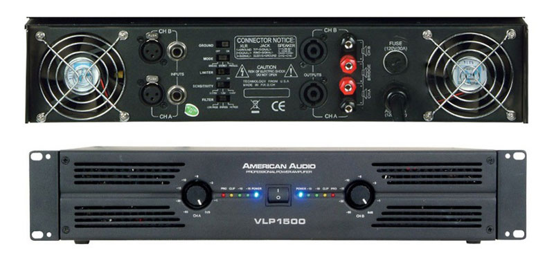

Усилители звука представляют собой специальные электронные устройства, обеспечивающие возможным выполнить усиление низкочастотных электрических колебаний, которые человек может воспринимать своим слуховым аппаратом. Исходя из этого, к устройствам усиления данного типа предоставляются требования по возможности работы в частотном диапазоне от 20 Гц до 20 кГц на уровне 3 дБ. Некоторые современные модели имеют более широкий диапазон частот, который может варьироваться в пределе от 0 до 200 кГц. Звуковые усилители могут выполняться как в качестве самостоятельных автономных устройств, так и входить в состав современной теле/аудио аппаратуры.
Звуковые усилители предназначены для усиления сигналов, при помощи которых передается информация с использованием звука. Поэтому сфера применения этих устройств достаточно широка. Они могут использоваться для усиления звукового сигнала в:
Отличительные особенности конструкционного решения усилителя
Системы усиления звуковых частот включают в свой состав систему предварительного усиления и усилителя мощности сигнала. Предварительную систему используют для того, чтобы повысить мощность сигнала к параметрам, требуемым для работы основного усилителя. Предусилитель включает в свой состав системы урегулирования тембра и громкости или эквалайзер. Он может быть частью основного усилителя или выполняться как отдельное устройство.
Задачей основного усиливающего устройства является формирования сигнала требуемой мощности и передачи его в цепь нагрузки, которая может включать в себя различные устройства излучения звуковых волн:
Следует отметить, что усилители звука стали неотъемлемой частью любой звукозаписывающей / воспроизводящей или транслирующей аппаратуры.
По использованию звуковых усилителей их можно разделить на две основные категории: бытовые и профессиональные.
Бытовые устройства усиления основным своим предназначением предусматривают небольшой уровень усиления звука с минимальными искажениями. Такие усилители в основном применяются для домашних музыкальных систем, для которых важным фактором является качество звучания, а не его громкость.
Профессиональные системы усиления в свою очередь делятся на концертные, студийные и инструментальные. Предложенные звуковые системы в основном используются для профессионального применения при организации концертов, студийных звукозаписей, озвучивания различных мероприятий и прочее. Отличительной чертой оборудования этого типа является высокий КПД и возможность получения существенного усиления звука с возможностью его передачи на мощные источники звуковоспроизведения на большие расстояния.
1. Мощность. Первым параметром, по которому выбирается усилитель звука, является его мощность. Этот параметр характеризует степень возможного усиления звуковой волны в определенной ситуации.
2. Чувствительность. Вторым важным параметром усилителей является чувствительность системы усиления. Этот параметр характеризует величину звукового давления в дБ, которое будет создано на расстоянии в 1метр при подведении к акустической системе мощности величиной в 1 Вт. Если акустическая система владеет большим коэффициентом чувствительности, то даже при незначительной подводимой мощности будет обеспечена высокая громкость звучания, нежели для устройства с низкими показателями уровня чувствительности.
3. Класс мощности. Еще одним параметром, характеризующим работу звукового усилителя, является класс мощности. За этим параметром различают следующие классы:
"А" – устройства характеризуются низким КПД – до 30%. В этом случае только 30% энергии уходит на усиление звуковой волны, остальное выделяется в виде теплового излучения. Такие устройства отличаются минимальными искажениями.
"В" – характерно значение КПД около 70%. Качество звука немного ниже, поскольку он кажется "сухим".
"АВ" – комбинированное решение между первыми двумя вариантами. Характерно то, что при высоком уровне сигнала устройство работает в "В"-режиме, а при низком уровне сигнала – в "А"-режиме. КПД таких устройств отличается порядка 60%, что позволяет получать достаточно высокое качество звука при высоком КПД.
"D" – устройства с максимальным КПД – около 85%. В таких устройствах применяются импульсные блоки питания, что обеспечивает им малый вес и мобильность.